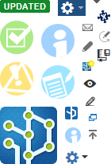

Every developer must have this hook on his local machine in order to:
The commit-msg hook is a python script file and it must be placed in the
developer's local repository as: .git/hooks/commit-msg.
There is no server-side hook required.
The following settings must be configured in the script file:
https://jira.example.com/rpc/xmlrpc)
re.compile(r'\[(\w+7-\d+?)\]'))
In Linux and OSX, this file must have executable permissions in the file system; in Windows, setting this permission is not necessary. To use the hook in Windows without python installed, see Python on Windows FAQ .
See the commit-msg hook code on the right panel or download the sample commit-msg file, make the necessary changes, and place it in the required folder.
#!/usr/bin/python
#
# This script is intended to be run as a commit-msg script in a GIT
# repository and check the presence of JIRA ticket numbers in the log messages.
#
# - NO_JIRA_TICKET_MESSAGE (an error message returned to the user when the
# svn commit message doesn't contain a jira ticket);
# - INVALID_JIRA_TICKET_MESSAGE (an error message returned to the user when
# the svn commit message contains an invalid jira ticket);
# - JIRA_XMLRPC (url of the JIRA XML-RPC server);
# - JIRA_USER (name of the JIRA user who has permission to look up issues in
# the JIRA server);
# - JIRA_PASSWORD (password of the JIRA user described above);
import sys
import re
import xmlrpclib
NO_JIRA_TICKET_MESSAGE = \
'No JIRA ticket present in the commit message. \
Please include the JIRA ticket enclosed in brackets: [ABC-789].'
INVALID_JIRA_TICKET_MESSAGE = \
'Proper JIRA ticket syntax was found, but none were valid tickets. \
Please check the tickets and try again.'
TOO_MANY_JIRA_TICKETS_MESSAGE = \
'Only 1 JIRA ticket is allowed per commit. Please commit only 1 change at a time.'
INVALID_ISSUE_TYPE_MESSAGE = \
'You may not commit against subtasks or task-splits. \
Please commit against the parent ticket.'
JIRA_XMLRPC = 'https://jira.example.com/rpc/xmlrpc'
JIRA_USER = 'user'
JIRA_PASSWORD = 'password'
JIRA_TICKET_PATTERN = re.compile(r'\[(\w+?-\d+?)\]')
FAULT_MSG_ISSUE_NOT_FOUND = 'com.atlassian.jira.rpc.exception.RemotePermissionException'
def check_message(message):
tickets = JIRA_TICKET_PATTERN.findall(message)
if not tickets:
return NO_JIRA_TICKET_MESSAGE
if len(tickets) > 1:
return TOO_MANY_JIRA_TICKETS_MESSAGE
ticket = tickets[0]
try:
issue = proxy.jira1.getIssue(auth, ticket)
except xmlrpclib.Fault, e:
if e.faultString.find(FAULT_MSG_ISSUE_NOT_FOUND) >= 0:
return INVALID_JIRA_TICKET_MESSAGE
else:
raise
# Check if issue is subtask or task-split
if issue['type'] == '8' or issue['type'] == '5':
return INVALID_ISSUE_TYPE_MESSAGE
return None
proxy = xmlrpclib.ServerProxy(JIRA_XMLRPC)
try:
auth = proxy.jira1.login(JIRA_USER, JIRA_PASSWORD)
except:
print >> sys.stderr, 'Cannot connect to JIRA: ' + str(sys.exc_info()[1])
sys.exit(2)
msg_file = open(sys.argv[1], 'r')
msg = msg_file.read()
err_msg = check_message(msg)
if err_msg:
print >> sys.stderr, 'Error: %s\nCommit message:\n%s' % (err_msg, msg)
sys.exit(1)
In addition to the commit-msg hook, you can use server-side hooks to apply policies for your project. The server runs these scripts before and after the push. The server-side hook, like commit-msg hook, requires Python to be installed.
In Linux and OSX, hook scripts must have executable permissions in the file system.
For information about the local hook that should be installed, see Customizing Git – Hooks . For further information about git hooks, see githooks.com .
When the server handles the push from a client, the pre-receive script is run first. When commits does not have proper JIRA issue tagging, an error message from client to server is raised.
The pre-receive server-side hook requires git administrators to:
hooks/ folder
in the git repository to the Git server repository hooks/ folder.(PROJECT_KEY1|PROJECT_KEY2|...)-\d+
See the server-side hook script on the right panel or download the sample pre-receive file – make the necessary changes, and place it in the required folder.
#!/usr/bin/python
import sys
import os
import xmlrpclib
import subprocess
import sys
import re
JIRA_XMLRPC = 'https://jira.example.com/rpc/xmlrpc'
JIRA_USER = 'user'
JIRA_PASSWORD = 'password'
PROJECT_KEYS = ['EXAMPLE', 'EXAMPLE']
NO_JIRA_TICKET_MESSAGE = \
'No JIRA ticket present in the commit message. \
Please include the JIRA ticket key.'
INVALID_JIRA_TICKET_MESSAGE = \
'Proper JIRA ticket syntax was found, but none were valid tickets. \
Please check the tickets and try again.'
INVALID_ISSUE_TYPE_MESSAGE = \
'You may not commit against subtasks or task-splits. \
Please commit against the parent ticket.'
FAULT_MSG_ISSUE_NOT_FOUND = 'com.atlassian.jira.rpc.exception.RemotePermissionException'
proxy = xmlrpclib.ServerProxy(JIRA_XMLRPC)
def git(args, **kwargs):
environ = os.environ.copy()
if 'repo' in kwargs:
environ['GIT_DIR'] = kwargs['repo']
if 'work' in kwargs:
environ['GIT_WORK_TREE'] = kwargs['work']
proc = subprocess.Popen(args, stdout=subprocess.PIPE, env=environ)
return proc.communicate()
def get_log(a, b, **kw):
entries = {}
(results, code) = git(('git', 'log', '--pretty=oneline', "%s..%s" % (a, b)), **kw)
lines = results.splitlines()
for line in lines:
(commit, msg)=line.split(' ', 1)
entries[commit] = msg
return entries
def check_message(auth, message, ticket_re_pattern):
tickets = ticket_re_pattern.findall(message)
if not tickets:
return NO_JIRA_TICKET_MESSAGE
if auth == None:
return None
for ticket in tickets:
try:
issue = proxy.jira1.getIssue(auth, ticket)
except xmlrpclib.Fault, e:
if e.faultString.find(FAULT_MSG_ISSUE_NOT_FOUND) >= 0:
return INVALID_JIRA_TICKET_MESSAGE
else:
raise
# Check if issue is subtask or task-split
if issue['type'] == '8' or issue['type'] == '5':
return INVALID_ISSUE_TYPE_MESSAGE
return None
def build_ticket_re(auth):
projects = proxy.jira1.getProjectsNoSchemes(auth)
return build_ticket_re_for_project_list(map(lambda project: project['key'], projects));
def build_ticket_re_for_project_list(projects):
pattern_string = '\\b('
for idx, project in enumerate(projects):
if (idx>0):
pattern_string +='|'
pattern_string +=project
pattern_string +='-\d+?'
pattern_string +=')\\b';
return re.compile(pattern_string)
def login():
try:
auth = proxy.jira1.login(JIRA_USER, JIRA_PASSWORD)
except:
print >> sys.stderr, 'Cannot connect to JIRA: ' + str(sys.exc_info()[1])
sys.exit(2)
return auth
try:
auth = login()
isAuthenticated = True
except:
isAuthenticated = False
if isAuthenticated:
ticket_re_pattern = build_ticket_re(auth)
else:
ticket_re_pattern = build_ticket_re_for_project_list(PROJECT_KEYS);
repo = os.getcwd()
basedir = os.path.join(repo, "..")
line = sys.stdin.read()
(base, commit, ref) = line.strip().split()
commits = get_log(base, commit)
for c, msg in commits.iteritems():
err_msg = check_message(auth if isAuthenticated else None, msg, ticket_re_pattern)
if err_msg:
print >> sys.stderr, 'Error: %s\nCommit message:\n%s' % (err_msg, msg)
print >> sys.stderr, 'Install pre-commit hook (https://bigbrassband.com/api-doc.html#cmhook) to run this check at the commit time'
sys.exit(1)
Trigger immediate reindex of your repositories from remote systems via webhooks. For more information about this topic, see About GitLab Webhooks .
Go to Administration > Add-ons > Git Integration Plugin for JIRA > Web Hooks.
Enable/disable the webhook feature by clicking on the Enable webhook checkbox.
The Secret Key is a secure random-generated alphanumeric string at the
time of the Git add-on installation. The user can change this to a
different value by generating another secret token according to your Git
host. Use this key in the form of <JIRA_BASE_URL>/git/webhook/reindex/<SECRET_KEY> .
GET , POST , or
PUT and the webhooks are enabled. DELETE or HEAD . The
body of a POST or PUT is ignored.
<JIRA_BASE_URL>/git/webhook/reindex/<SECRET_KEY>
The post bulk change API extends the possibility of importing and exporting repository configuration by automating the process via scripts.
To use the API, users must:
JIRA_BASE, JIRA_USER, and
JIRA_PASSWORD in the configuration_conf.py
file. The JIRA_USER defined in this file must have JIRA
Admin global permissions.(Download sample file as a zip file.)| Bulk Export Configuration |
|---|
| url |
/rest/gitplugin/1.0/configurationThe API returns a file with the plugin configuration. |
| method |
| GET |
| parameters |
| None |
| response |
| Generates a tab-separated values (.tsv) file. |
| Download sample file |
| configuration_get.py |
Usage:
user@home:~$ python configuration_get.py > conf.tsv
| Bulk Import Configuration |
|---|
| url |
/rest/gitplugin/1.0/configuration.jsonStarts the process of importing configuration and returns the result at once. |
| method |
| POST |
| parameters |
fileInput the path to the tab-separated values (.TSV) file. |
confirmed-delete[ ]Optional. Accepts multiple repository IDs confirmed for deletion. Input one or more repositories to delete, separated by commas. Repositories won't be deleted if it's not in this list. |
| response |
| JSON Returns the ID of the importing thread. |
|
The Git Add-on will ignore fields with blank entries.
|
| Download sample file |
| configuration_post.py |
Example:
http://jira.example.org/rest/gitplugin/1.0/configuration.json
Response example:
{
"success":false,
"threadId":142
}
Usage:
Importing configuration from conf.tsv file:
user@home:~$ python configuration_post.py conf.tsv
{"success":false,"reposToDelete":[{"id":14,"description":"test-repo"},
{"id":15,"description":"test-repo"}]}
Importing configuration from conf.tsv file with confirm delete:
user@home:~$ python configuration_post.py conf.tsv 14,15
{"success":false,"threadId":1058}
| Getting Bulk Import Information |
|---|
| url |
/rest/gitplugin/1.0/configuration/progress.jsonObtains information about the importing thread. Use the following path format to access bulk import information. |
| method |
| GET |
| parameters |
thread_idRequired. Input a thread ID to access information about the specific thread process. |
| response |
| JSON Returns the status information of the import process. |
| Download sample file |
| configuration_progress.py |
Example:
http://jira.example.org/rest/gitplugin/1.0/configuration/progress.json?thread_id=123
Response example:
{
"success":false,
"finished":true,
"progressEntries":[{
"prcntDouble":0.0,
"prcntInteger":0,
"error":false,
"message":"Creating repository git@github.com:user/test-repo.git"
},{
"error":true,
"message": "java.lang.NullPointerException"
},{
"prcntDouble":100.0,
"prcntInteger":1042,
"error":false,
"message":"Resolving deltas"
}
]
}
Usage:
user@home:~$ python configuration_progress.py 1058
{"success":false,"finished":true,"progressEntries":[{
...
Call the Reindex REST API to have more control on indexing:
| Reindex API | |
|---|---|
| url | |
/rest/gitplugin/1.0/index.jsonStarts the reindex process in a separate thread and returns the result immediately. |
|
| method | |
| GET | |
| parameters | |
repoId Repository ID (long) |
|
| Optional. If not specified, all repositories will be indexed. | |
threadId ID of thread to track (long) |
|
| Optional. Use to track messages for particular thread. This parameter is not required to start reindex. | |
| Repositories won't be deleted if it's not in this list. | |
| response | |
| JSON | |
| Returns the status of the reindex process. | |
Example:
http://andrl:2990/jira/rest/gitplugin/1.0/index.json
Response:
{
"success":true,
"finished":true,
"threadId":172,
"messages": {
"Indexing test-repo":100.0
},
"errors": {},
"lastOperationPercent":100.0
}
Call the Get Commits API to obtain commit information associated with an issue.
| Get Commits REST API |
|---|
| url |
/rest/gitplugin/1.0/issues/{issueKey}/commits |
| method |
| GET |
| parameters |
issuekey |
| Required. Jira issue key Example: TST-234 |
Example:
http://jira.yourorg.com/rest/gitplugin/1.0/issues/TST-234/commits
Returns the following example result:
{
"commits":[
{
"author": "msmith ",
"commitId": "34efa20372f0e2f0c9b705aacc57d7ad82e01426",
"date": "2015-05-18T10:52:54.000+0000",
"message": "TST-234 Update link in documentation"
"notes": {
"refs/notes/commits": "TST-1 fixed also"
},
},
{
"author": "msmith ",
"commitId": "52696c2d963be8986c7a2444b6473ea785632dce",
"date": "2015-05-18T17:41:58.000+0000",
"message": "TST-234 Remove libtiff dependency"
}
]
}
Extend the Commits API to review which files changed related to a
specific JIRA issue by adding ?showfiles=[true|false] as an optional parameter.
| showFiles Commits REST API |
|---|
| url |
/rest/gitplugin/1.0/issues/{issueKey}/commits{?showFiles=[true|false]} |
| method |
| GET |
| parameters |
issuekey |
| Required. Jira issue key Example: TST-123 |
Usage:
http://jira.yourorg.com/jira/rest/gitplugin/1.0/issues/TST-123/commits?showFiles=true
Returns the following example result, if showFiles=true:
{
"commits": [
{
"author": "msmith ",
"commitId": "257b4a8490270014922f3b821d61c86e76166dd9",
"date": "2015-12-07 10:54:56 +0600",
"message": "message with TST-123",
"notes": {
"refs/notes/commits": "TST-1 fixed also"
},
"files": [
{
"path": "testFile2.txt",
"linesAdded": 1,
"linesChanged": 0,
"linesDeleted": 0,
"added": true,
"deleted": false,
}
]
}
]
}
Uses the branches associated to a ticket.
| Get Branches REST API |
|---|
| url |
| rest/gitplugin/1.0/issues/branches?key={issuekey} |
| method |
| GET |
| parameters |
key |
| Optional. Jira issue key Example: "TST-435" |
| result |
| If optional query is not defined, it will return all indexed git branches. |
Example: http://jira.yourorg.com/rest/gitplugin/1.0/issues/branches?key="TST-435"
Result:
{
"success":true,
"branches":["master","release","TST-435"]
}